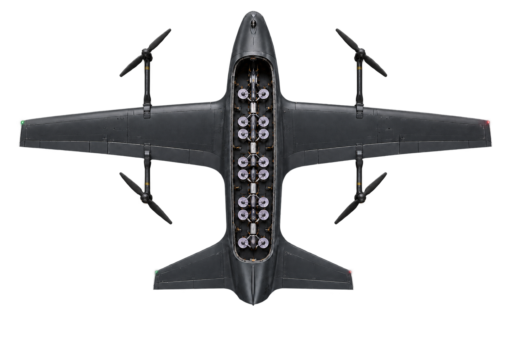
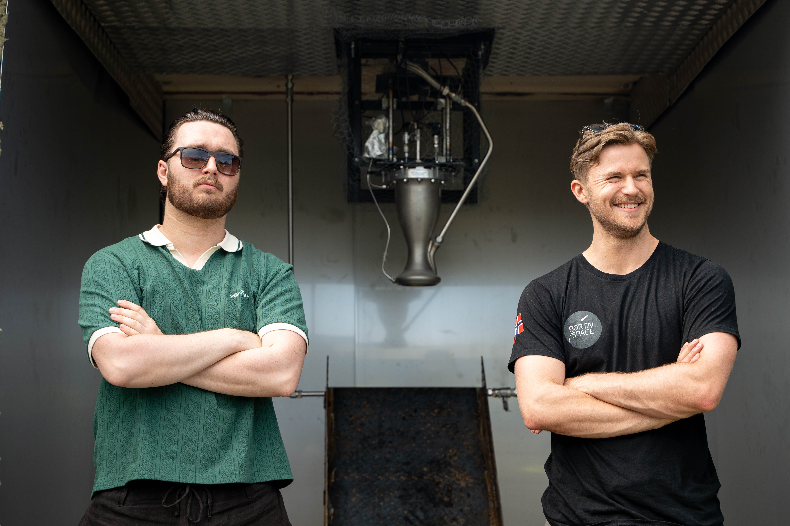

STRID
Drone carrier fleets for Europe.
Drones got cheap. They did not get range.
20+ conversations with Ukrainian frontline operators, and this is the problem they put first.
01 FPV
And the operator has to fly it from inside the kill zone.
02 Fixed-wing, one-way
The airframe dies with the round, so redundant comms never pay for themselves.
Reuse the expensive part.

Our entry to the market
Matriarch
ONE
Can it be shot down? Yes.
This is the economics of war. If what takes it down costs more than the carrier itself, we are already ahead.
Built for the best drones everyone is using
The drones change every year. The carrier does not.
Build a carrier as a prime and you are probably building its drones too. Now you are not competing with us, you are competing with every FPV shop on the frontline.

Rocket engineers with a defence background.
Sander Sørås
Co-founder, CEO
Viktor Warholm
Co-founder, CTO
Where we come from
We built a liquid-fuelled rocket first.

Military drone market
The market more than doubles this decade.
Addressable · 2026
Capital has already decided
Drone tech is minting multi-billion dollar companies.
We sell carriers, not the drones inside them.
Target unit price
Three phases
Earn it in Ukraine. Sell it to Europe.
Test, feedback, iterate.
Sell it to the operators who need it now.
These states buy on evidence from Ukraine, not on a brochure.
Eighteen months of runway
From airframe to first delivery.
Ten years out
Matriarch ONE is the entry. The carrier layer is the company.
What we are raising
Eighteen months of runway, to a carrier that has been tested in the field and iterated on what came back.
Where it goes
What it buys
What operators said
We did not invent the requirement.
Ukrainian frontline operators
Strike operators, instructors and unit engineers. Flying missions now, not analysts.
“When someone gives us a 100 km mother drone, we will test it, and I think it will work.”Field operator · Mirage Unmanned Systems Team
“The next logical step is to have mothership drones.”Exile · SOF operator
“Midrange strike is the one thing they are really doing well with. If you can make it cheaper, that is amazing.”Exile · SOF operator
Working notes
Press N to drop both notat slides from the PDF, or delete the sections.
One-liner: in use and in reserve
- Slide 1 now reads “Europe's unmanned strike carriers.” Names a category that does not exist yet, and “carrier” carries the naval weight that “delivery layer” did not.
- Still at the foot of slide 1: “Big drones that carry small drones.” Promote it if the room is non-technical.
- Other candidates: “Reach is the weapon.”, “Reusable carriers for Europe's unmanned arsenal.”, “We carry the strike.” “Delivery layer” is gone from the deck entirely.
Numbers that must be verified
- Market figures are verified: $22.49B (2026), $52.31B (2034), 11.1% CAGR. Fortune Business Insights, Military Drone Market, Aug 2026.
- Valuations are now shown plainly rather than bracketed, with a footer saying reported and not independently verified. Anduril $61B, Helsing $18B, Stark $4B. Still worth confirming.
- Range: know this cold. The deck now says
30 kmon slide 07, matching its own diagram: the quad launches 5 km behind our line, flies 30, and dies 5 km short of theirs. That is the standard short-range FPV an infantry unit actually carries, and saying so is the concession to lead with. Every one of our own sources is higher, and the gap is wider than the old~50 kmfigure left it: Anton, 10-inch ground-attack at 70 km, 50 km is “a great result”; Yonchi's operator, “50, 60, 70”; the old deck, 70 km. The slide 08 quote was trimmed to drop its “50, 60, 70” opening, which contradicted slide 07 on screen. If anyone says “it's 70”, concede at once and go to the argument that does not depend on the number: 70 km one way still cannot deploy at 100 km and come home.
Build status, stated honestly
- Nothing claims a flown drone. Slide 6 says prototype design, not yet flown and labels the numbers design targets.
- Only built hardware claimed anywhere: the 2DOF drone test-rig and the Portal Space rocket work. Both true.
- Still missing: a milestones slide and an ask slide. “Not yet flown” invites “when, and for how much”, and the deck currently never answers either.
Running order, and why
- 01 Title · 02 Origin · 03 Founders · 04 The mapping · 05 The turn · 06 Product · 07 Why this · 08 Listen · 09 What they said · 10 Market · 11 Go to market · 12 The 1000x case.
- 04 gives the need-mapping its own slide, so the turn on 05 reads as a conclusion drawn from evidence rather than a swerve.
- 08 and 09 were one slide. Split so the recording plays with nothing on screen to read, and the quotes get their own beat after. If you are short on time, 08 is the one to drop.
- The reveal sits before the problem slides, so 07 and 08 answer “why does this exist” instead of setting it up.
Production notes
Sources, media slots, animation, assets.
Where slide 08 comes from
- Every quote is lifted from the Notion CRM, Personer database, not written for the deck.
- Hero quote: Yonchi's father, field operator, Mirage Unmanned Systems Team, from the interpreted call transcript. He also offered to field-test a prototype and collect it at the border. Strongest traction in the deck.
- Corroboration: Exile and Anton pages.
- Unused, too raw to print but worth saying out loud: Exile on a fixed wing loitering overhead dropping quadcopters. Also the farmboy quote, whose point now lives as problem 03 on slide 07.
Where video and audio go
- Slide 02 runs the rocket aftermovie, full length, muted, looping.
The delivered file was 404 MB at 25 Mbps with its moov atom at the end,
so a browser had to fetch all 404 MB before it could even index it, and
playback stalled. Re-encoded to 41 MB at 2.5 Mbps with faststart. Same
length, no audio. Recipe is in
RESUME.md. - Slide 06 runs the real reveal, 19.2s, then hands over to a loop on its
last frame. The loop file is not supplied yet; drop it in as
matriarch-reveal-loop.mp4. Capability lines at 12s, sliding in from the left 0.2s apart; the lockup rises at 16s. Cued off the film's owncurrentTime, so they cannot drift.CUE_SPECS/CUE_NAMEinjs/deck.js. - Slide 08, audio: the whole slide is the slot, so nothing competes with listening. A PDF makes it a still, so play it from your phone.
Animation and the dot field
- Live: staggered fade and rise, scale-in on the render, counter on 20+, per-dot pop on the dot fields.
- Slide 10 is a 9-second timeline in
marketSequence(): 0-2s the 2026 bar alone with 11.1% counting, 2-3s hold, then 3-9s every other bar in one continuous run that decelerates all the way into the 2034 bar. Everything else has landed by 7.8s, so the last one finishes alone. Nine timed grows plus a counter to rebuild in PowerPoint, so consider shipping it as a still. - Slide 07 is to one linear scale, 12.17 px per km. Operator 5 km back, our line at 5, their line at 35, so the zone is 30 km. The quad flies 30 and stops 5 km short of their line. That shortfall is arithmetic, not a drawing decision, which is what makes the slide safe to show an operator.
- Static: slide 05's strikethrough. Intended to wipe across “rockets” before the drones line rises.
Assets and decisions
- Slide 06 is the film now. The transparent top view stays in the file as the print fallback, since video does not print. Replace it with a frame grab of the film's final shot when you have one.
- The mark is the real vector now, from
assets/logo/strid-mark.svg, traced intoSTRID_MARKinjs/deck.jsso it can take a CSS colour and animate dot by dot. White on 01, accent on 11. The earlier square reconstruction is gone. Wordmark is still set in Archivo 800, not real logotype. - Not carried over from the old deck: business model, competition, vehicle architecture, milestones.